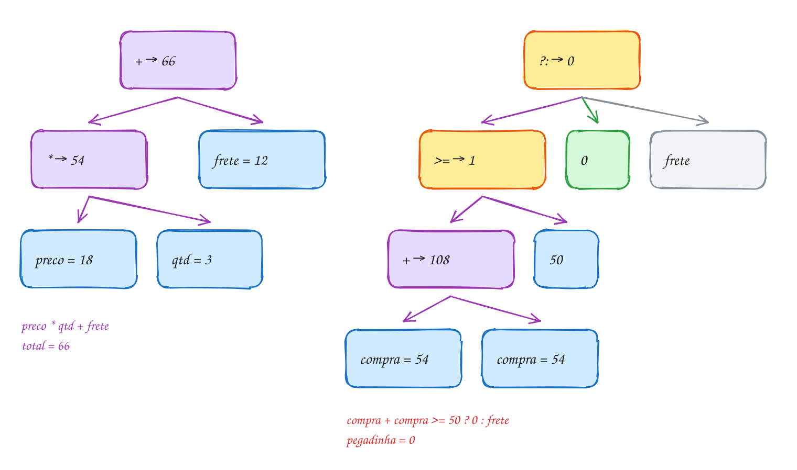
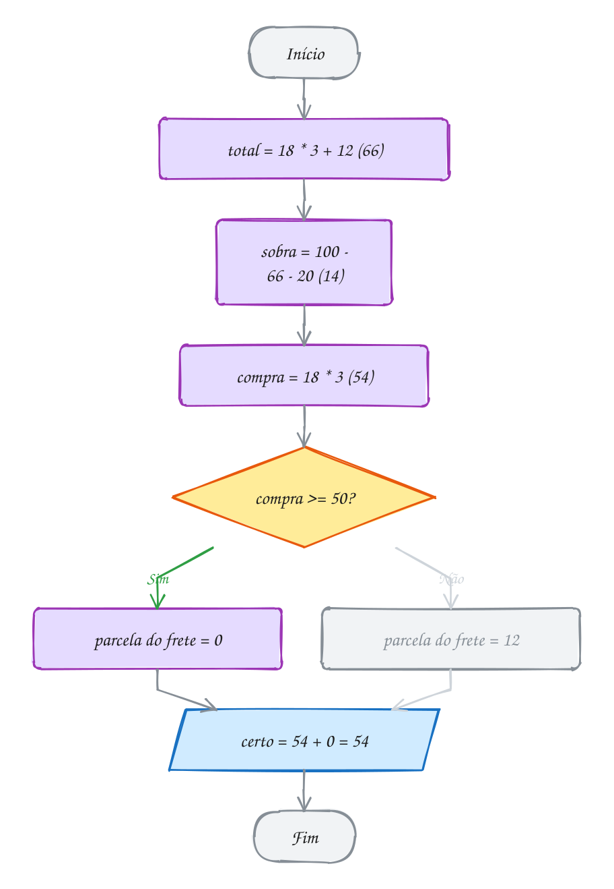
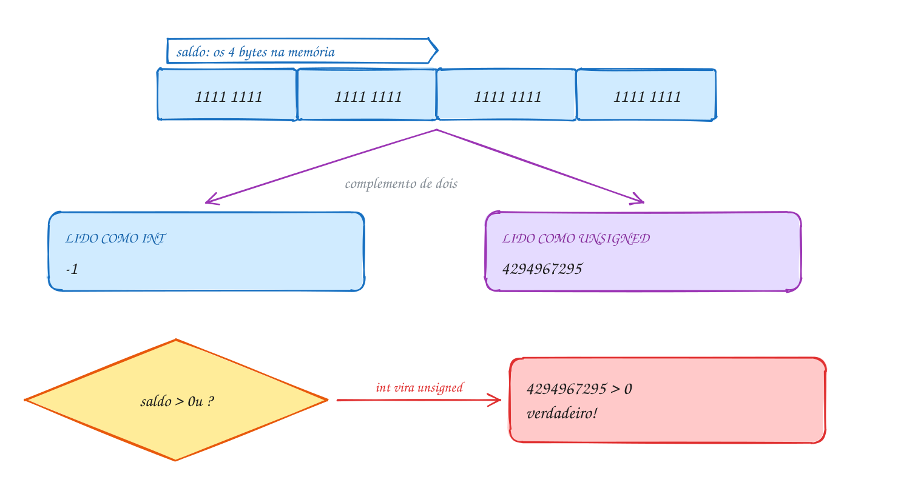
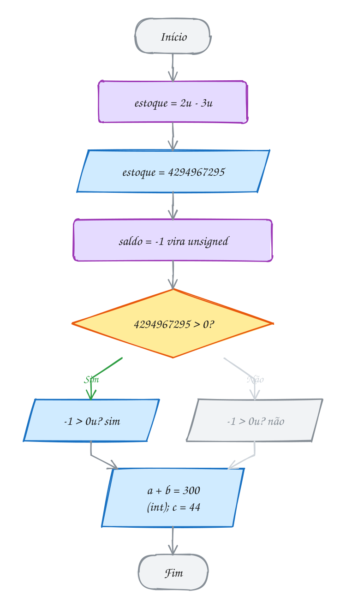
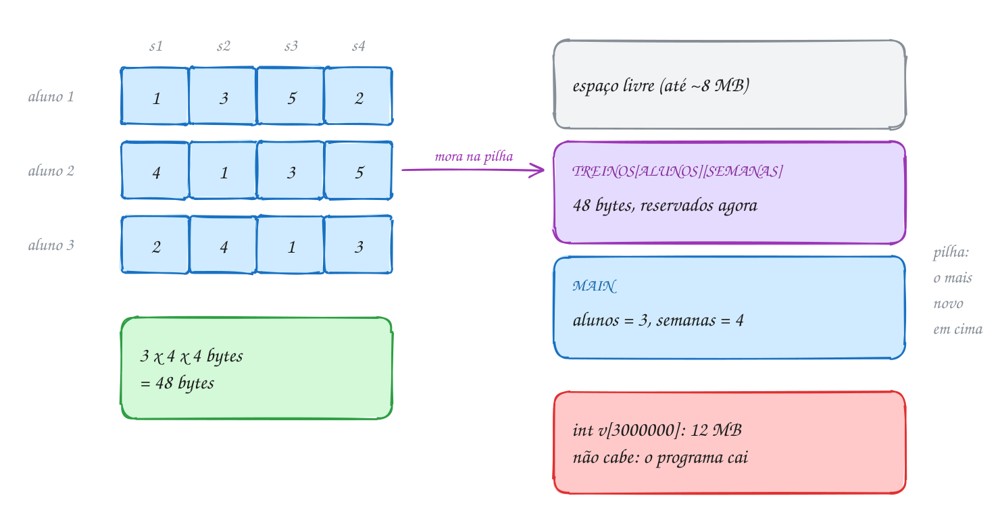
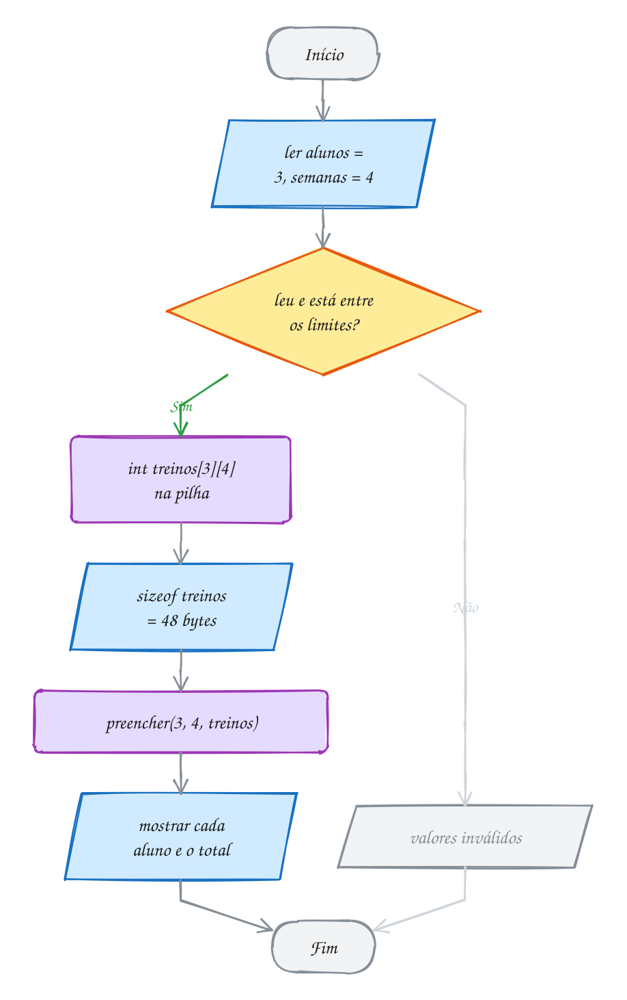
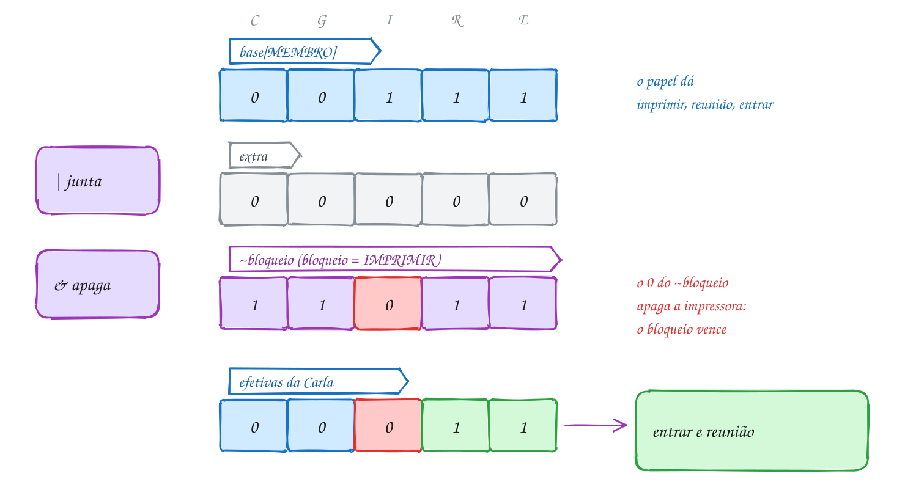
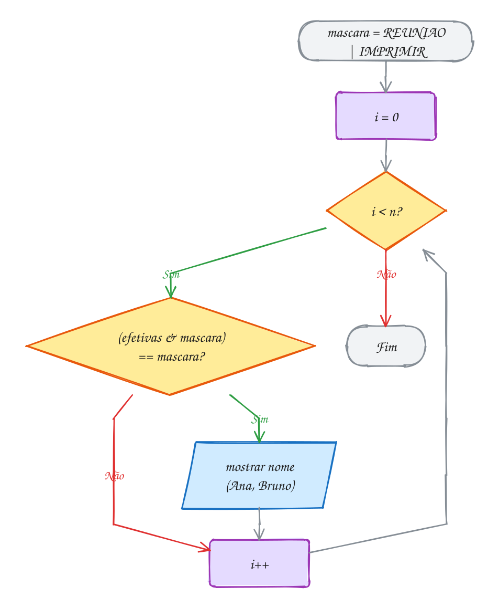

[!IMPORTANT] Mundo 2 · Memória e dados · Rota do jogo: etapa 9 de 29 · módulo bônus ★
Missão: dominar as pegadinhas de precedência, sinal e VLA que a prova cobra.
Vem de: Módulo 08 · Tipos compostos. Segue para: Módulo 09 · Arquivos e linha de comando.
Checkpoints desta fase:
- Ler os assuntos 0170 a 0173 e refazer os exemplos
- Resolver os 4 exercícios de cada assunto, escrevendo o código sozinho
- Fechar a lista prática (P2701 a P2730)
- Enfrentar os desafios do módulo
- Chefão: resolver as questões de prova do módulo sem consultar
Regras do C que a prova explora com código curto: precedência e ordem de
avaliação, mistura de inteiros com e sem sinal (por que -1 > 0u é
verdadeiro) e o vetor de tamanho variável (VLA). Relê os módulos 01 a 08 com
mais rigor.
i = i++-1 > 0u>>, máscaras e size_t sem cair no negativo e no laço que descevoid f(int l, int c, int m[l][c])) e conhecer o risco da pilhaUsa os operadores dos módulos 01 e 02, os bits e máscaras do 0065, struct e
enum do módulo 08 e malloc/free do módulo 07. Prepara os módulos 28 e 29,
que reusam máscaras e inteiros sem sinal.
Os valores dos comentários são de um PC de 64 bits com Linux e gcc: int e
unsigned com 4 bytes, long e size_t com 8. Compile com -Wall -Wextra:
os avisos pegam vários erros do módulo.
| # | Assunto |
|---|---|
| 0170 | Precedência e ordem de avaliação |
| 0171 | Com sinal e sem sinal |
| 0172 | Vetor de tamanho variável (VLA) |
| 0173 | Juntando tudo: o controle de acesso |
[!NOTE] Cada assunto é um capítulo: Conceito (a explicação), Exemplos de uso (programas que compilam sozinhos: rode com o comando abaixo de cada um e compare com a saída no fim do código) e Exercícios (cada um é um arquivo em
material/com o esqueleto, as dicas e o espaço para a resposta; resoluções em_respostas/27-c-detalhes/).
Três pacotes de café a R$ 18 cada, mais R$ 12 de frete. Você escreve
18 * 3 + 12 e espera 66, e o C dá 66. Mas por que não 270, que seria
18 * (3 + 12)? Porque a ordem em que os operadores pegam seus operandos é
fixa, e quem escreve a expressão precisa conhecê-la. A prova adora esconder
essa ordem numa linha só, com cinco operadores e nenhum parêntese.
A primeira regra é a precedência: ela diz qual operador pega os
operandos primeiro (DEITEL; DEITEL, 2011, cap. 2). O * tem precedência
maior que o +, então em 18 * 3 + 12 o * agarra o 18 e o 3, e o +
recebe o resultado e o 12. Uma boa imagem é uma árvore: o operador de
menor precedência fica na raiz e age por último; os de maior
precedência ficam nos galhos e agem antes. Os parênteses mudam a árvore:
18 * (3 + 12) põe o + num galho.
A segunda regra resolve empates. Quando dois operadores têm a mesma
precedência, a associatividade diz de que lado começa o agrupamento
(KERNIGHAN; RITCHIE, 1988, cap. 2). A subtração agrupa da esquerda para a
direita: 100 - 66 - 20 é (100 - 66) - 20, que dá 14, e não
100 - (66 - 20), que daria 54. A atribuição agrupa da direita para a
esquerda: a = b = 5 é a = (b = 5), que guarda 5 em b e depois o
mesmo 5 em a.
A tabela completa está no fim, mas três pontos dela caem em prova e merecem
atenção (CPPREFERENCE, s.d.). Os operadores bit a bit &, ^ e | ficam
abaixo do ==, então x & 3 == 3 é x & (3 == 3), que vira x & 1.
O ?: fica abaixo de quase tudo, então
compra + compra >= 50 ? 0 : frete pergunta se a soma inteira passa de 50.
E as atribuições compostas têm a precedência mais baixa antes da vírgula:
a *= 2 + 1 é a = a * (2 + 1), e não a * 2 + 1.
Agora a parte que mais confunde: agrupar não é calcular. A precedência
e a associatividade dizem como a expressão se divide em pedaços; elas não
dizem em que ordem os pedaços são calculados. Em f() + g(), a soma junta
os dois resultados, mas a ordem de avaliação, qual das duas funções
roda primeiro, não é especificada pela norma. O compilador visita os galhos
da árvore na ordem que preferir. Só quatro operadores garantem que o lado
esquerdo é calculado antes do direito: &&, ||, ?: e a vírgula. E uma
função só começa depois de todos os seus argumentos estarem prontos
(ISO/IEC, 2018).
O && e o || vão além: eles têm curto-circuito. Em a && b, se a
dá 0, o resultado já é 0, e o b nem é calculado. Em a || b, se a dá
diferente de 0, o resultado já é 1, e o b também é pulado (DEITEL;
DEITEL, 2011, cap. 4). É isso que torna seguro escrever
p != NULL && p->valor > 0: se p é NULL, o acesso p->valor não
acontece.
A ordem de avaliação importa por causa dos efeitos colaterais, tudo o
que uma expressão muda além de produzir um valor. i++ produz o valor de
i e, como efeito colateral, muda i; printf produz um número e escreve
na tela. Se a mesma variável é mudada duas vezes, ou mudada e lida, sem que
a norma garanta qual vem antes, o resultado é comportamento
indefinido: o programa pode dar qualquer coisa, e cada compilador pode dar
algo diferente. São exemplos i = i++, v[i] = i++ e
printf("%d %d", i, i++) (ISO/IEC, 2018).
| Nível | Operadores | Agrupa |
|---|---|---|
| 1 | () [] -> . x++ x-- |
esquerda → direita |
| 2 | ++x --x +x -x ! ~ *p &x (tipo) sizeof |
direita → esquerda |
| 3 | * / % |
esquerda → direita |
| 4 | + - |
esquerda → direita |
| 5 | << >> |
esquerda → direita |
| 6 | < <= > >= |
esquerda → direita |
| 7 | == != |
esquerda → direita |
| 8 | & |
esquerda → direita |
| 9 | ^ |
esquerda → direita |
| 10 | | |
esquerda → direita |
| 11 | && |
esquerda → direita |
| 12 | || |
esquerda → direita |
| 13 | ?: |
direita → esquerda |
| 14 | = += -= *= /= %= <<= >>= &= ^= |= |
direita → esquerda |
| 15 | , |
esquerda → direita |
[!WARNING]
i = i++é comportamento indefinido. Com-Wall, o gcc avisa (operation on 'i' may be undefined). Ele também avisax & 3 == 3ea || b && c, mas nãocompra + compra >= 50 ? 0 : frete. Na dúvida, use parênteses.
Três pacotes de café a R$ 18 mais R$ 12 de frete, com frete grátis a partir
de R$ 50. O operador de menor precedência fica na raiz da árvore e age por
último; no frete grátis, é o ?::

#include <stdio.h>
int main(void) {
int preco = 18, qtd = 3, frete = 12; // 3 pacotes de café a R$ 18
int total = preco * qtd + frete; // * antes de +: (18 * 3) + 12
int outro = preco * (qtd + frete); // parênteses mandam: 18 * 15
printf("total = %d, outro = %d\n", total, outro);
int sobra = 100 - total - 20; // - é da esquerda: (100 - 66) - 20
printf("sobra = %d\n", sobra);
int a, b;
a = b = 5; // = é da direita: a = (b = 5)
a *= 2 + 1; // a = a * (2 + 1), não a * 2 + 1
printf("a = %d, b = %d\n", a, b);
int compra = preco * qtd; // 54
// frete grátis a partir de R$ 50: o ?: fica ABAIXO do +
int pegadinha = compra + compra >= 50 ? 0 : frete; // ((54 + 54) >= 50) ? 0 : 12
int certo = compra + (compra >= 50 ? 0 : frete); // 54 + 0
printf("pegadinha = %d, certo = %d\n", pegadinha, certo);
int gratis = compra >= 50 && qtd >= 3; // relacionais antes de &&: (54 >= 50) && (3 >= 3)
printf("frete grátis? %d\n", gratis);
return 0;
}
// Saída:
// total = 66, outro = 270
// sobra = 14
// a = 15, b = 5
// pegadinha = 0, certo = 54
// frete grátis? 1
No fluxograma, o ?: é uma pergunta escondida; no certo, ela olha só o
compra:

Com -Wall, o gcc avisa sobre i = i++:
warning: operation on 'i' may be undefined [-Wsequence-point].
Exemplo A339 · O lado direito que nem roda
#include <stdbool.h>
#include <stdio.h>
int consultas = 0; // quantas vezes o "banco" foi consultado
bool tem_saldo(int saldo, int valor) {
consultas++;
printf(" (consultou o saldo)\n");
return saldo >= valor;
}
int main(void) {
// && e ||: o lado esquerdo vai primeiro, e o direito só roda se precisar
bool conta_ativa = false;
printf("Pix de R$ 80 numa conta bloqueada:\n");
if (conta_ativa && tem_saldo(200, 80)) {
printf(" enviado\n");
} else {
printf(" recusado\n");
}
conta_ativa = true;
printf("Pix de R$ 80 numa conta ativa:\n");
if (conta_ativa && tem_saldo(200, 80)) {
printf(" enviado\n");
}
printf("consultas ao saldo: %d\n", consultas);
// ?: encadeado agrupa da direita: a ? x : (b ? y : z)
int distancias[] = {3, 12, 40};
for (int i = 0; i < 3; i++) {
int km = distancias[i];
int frete = km <= 5 ? 8 : km <= 15 ? 14 : 25;
printf("%2d km -> frete R$ %d\n", km, frete);
}
// a vírgula: avalia a esquerda, descarta, e o valor é o da direita
int fila[] = {1, 2, 3, 4, 5};
for (int i = 0, j = 4; i < j; i++, j--) { // duas variáveis andando juntas
int t = fila[i];
fila[i] = fila[j];
fila[j] = t;
}
printf("fila invertida:");
for (int i = 0; i < 5; i++) {
printf(" %d", fila[i]);
}
printf("\n");
return 0;
}
// Saída:
// Pix de R$ 80 numa conta bloqueada:
// recusado
// Pix de R$ 80 numa conta ativa:
// (consultou o saldo)
// enviado
// consultas ao saldo: 1
// 3 km -> frete R$ 8
// 12 km -> frete R$ 14
// 40 km -> frete R$ 25
// fila invertida: 5 4 3 2 1
gcc ~/LPEDC/material/A339.c -o ~/LPEDC/material/A339 && ~/LPEDC/material/A339
Exemplo A340 · A ordem que o padrão não promete
#include <stdio.h>
int passo = 0; // marca a ordem em que as funções rodam
int pedir_pao(void) {
printf(" pão chegou em %d\n", ++passo);
return 7; // R$ 7
}
int pedir_cafe(void) {
printf(" café chegou em %d\n", ++passo);
return 5; // R$ 5
}
int main(void) {
// a soma é sempre 12; QUEM roda primeiro, o padrão não diz
printf("conta junta:\n");
int conta = pedir_pao() + pedir_cafe();
printf(" conta = %d\n", conta);
// quando a ordem importa, separe em instruções: o ; fixa a ordem
passo = 0;
printf("conta em passos:\n");
int pao = pedir_pao();
int cafe = pedir_cafe();
printf(" conta = %d\n", pao + cafe);
// pré e pós-incremento, cada um sozinho na sua instrução
int senha = 41;
int chamada = senha++; // usa 41, depois senha vira 42
printf("chamou %d, próxima senha %d\n", chamada, senha);
chamada = ++senha; // senha vira 43, depois usa 43
printf("chamou %d, próxima senha %d\n", chamada, senha);
// sizeof não avalia a expressão: o ++ abaixo NÃO acontece
int n = 10;
size_t bytes = sizeof(n++);
printf("sizeof(n++) = %zu, n continua %d\n", bytes, n);
return 0;
}
// Saída (a ordem da "conta junta" é a do gcc deste PC; outro compilador
// pode chamar o café primeiro):
// conta junta:
// pão chegou em 1
// café chegou em 2
// conta = 12
// conta em passos:
// pão chegou em 1
// café chegou em 2
// conta = 12
// chamou 41, próxima senha 42
// chamou 43, próxima senha 43
// sizeof(n++) = 4, n continua 10
gcc ~/LPEDC/material/A340.c -o ~/LPEDC/material/A340 && ~/LPEDC/material/A340
Exercício E1016 · ★☆☆
Escreva um programa que mostre, para cada expressão abaixo, o valor dela como está e o valor da mesma conta com todos os parênteses no jeito que o C agrupa. Os dois números de cada linha têm que bater. Para as duas últimas, que são atribuições, mostre as variáveis depois da instrução.
100 / 10 / 5 2 - 3 - 4 2 * 3 % 4
a = b = c = 7 x = 5; x -= 1 + 2
Saída esperada:
100 / 10 / 5 = 2 ((100 / 10) / 5) = 2
2 - 3 - 4 = -5 ((2 - 3) - 4) = -5
2 * 3 % 4 = 2 ((2 * 3) % 4) = 2
a = b = c = 7 -> a = 7, b = 7, c = 7
x -= 1 + 2 -> x = 2
Exercício E1017 · ★★☆
Escreva as duas funções abaixo, que fazem o trabalho de x++ e ++x recebendo o endereço da variável:
int pos_incremento(int *p) // devolve o valor antigo, depois soma 1
int pre_incremento(int *p) // soma 1, depois devolve o valor novo
No main, comece com a = 5, calcule b = a++ * 2 e c = ++a * 2 com os operadores e mostre a linha "com ++". Refaça as mesmas contas com as suas funções, em a2, b2 e c2, e mostre a linha "com funcoes".
Saída esperada:
com ++: a = 7, b = 10, c = 14
com funcoes: a = 7, b = 10, c = 14
Exercício E1018 · ★★☆
Quatro amigos alugaram uma casa de praia por R$ 2400 para 3 dias. Escreva um programa, com int total, pessoas e dias, que mostre:
- o custo por pessoa por dia: o total dividido por (pessoas x dias);
- quanto cada um paga: a sua parte do total mais R$ 50 de limpeza
quando a estadia passa de 2 dias;
- o desconto à vista: 10% do total.
Saída esperada:
por pessoa por dia: R$ 200
cada um paga: R$ 650
desconto à vista: R$ 240
Exercício E1020 · ★★★
Um colega escreveu a busca de um código no estoque assim:
while (v[i] != alvo && i < n) i++;
Quando o código não existe, ele lê v[n], que fica fora do vetor (o AddressSanitizer acusa). Escreva a versão segura:
int procurar(const int *v, int n, int alvo, int *lidos)
Ela devolve o índice do alvo, ou -1, e conta em *lidos quantas vezes leu uma casa do vetor. Teste com os códigos {12, 7, 30, 7, 55}, procurando 30 e 99, e com um vetor vazio (n = 0).
Saída esperada:
procurar 30: indice 2, leituras 3
procurar 99: indice -1, leituras 5
vetor vazio: indice -1, leituras 0
A loja tinha 2 fones no estoque, vendeu 3, e o sistema anunciou um estoque
de 4294967295 fones. Ninguém digitou esse número. O estoque estava numa
variável unsigned, e uma variável sem sinal não consegue guardar -1: a
conta deu a volta e caiu no maior valor possível. Entender por que isso
acontece evita uma família inteira de erros silenciosos em C.
Os tipos inteiros do C se dividem em dois grupos. Os com sinal, como
int, signed char e long, guardam números negativos e positivos: num
int de 32 bits, de -2147483648 a 2147483647 (BACKES, 2013). Os sem
sinal, como unsigned, unsigned char e size_t, guardam só zero e
positivos, e com os mesmos 32 bits vão de 0 a 4294967295, o valor da
constante UINT_MAX. O tipo sem sinal aparece mesmo quando você não o
pediu: sizeof e strlen devolvem size_t (KERNIGHAN; RITCHIE, 1988,
cap. 2).
Os mesmos bits podem significar números diferentes, conforme o tipo. O C
guarda os negativos em complemento de dois: o -1 de um int são os 32
bits todos ligados. Lidos como unsigned, esses mesmos 32 bits valem
4294967295 (DEITEL; DEITEL, 2011, apêndice D). O número na memória não
muda; muda a leitura.
A aritmética sem sinal dá a volta, como o odômetro de um carro que passa
de 999999 para 000000. Toda conta é feita módulo 2³²: 2u - 3u dá
4294967295, e UINT_MAX + 1u dá 0. Esse comportamento é definido pela
norma e você pode contar com ele. Já estourar um tipo com sinal, como
em INT_MAX + 1, é comportamento indefinido: a norma não diz o que
acontece (ISO/IEC, 2018).
O perigo maior aparece quando uma expressão mistura tipos. Antes de
calcular, o C aplica duas regras. A primeira é a promoção inteira: os
tipos menores que int (char, short, unsigned char, bool e os
enum) viram int antes de qualquer conta (ISO/IEC, 2018). Por isso dois
unsigned char valendo 200 e 100 somam 300, um int; o excesso só é
cortado se você guardar o resultado num byte, e aí sobra 44.
A segunda é a conversão aritmética usual: quando os dois operandos têm
tipos diferentes, os dois viram o tipo "maior" antes da conta (KERNIGHAN;
RITCHIE, 1988, cap. 2). Entre int e unsigned do mesmo tamanho, ganha o
unsigned. Se o tipo com sinal for maior e conseguir guardar todos os
valores do sem sinal, como um long de 64 bits contra um unsigned de 32,
ganha o com sinal. E se um dos dois é double, tudo vira double.
Dessa segunda regra sai a pegadinha mais famosa: -1 > 0u é
verdadeiro. O 0u é unsigned, então o -1 é convertido para
unsigned e vira 4294967295, que é maior que 0. Já -1L < 1u é
verdadeiro no Linux de 64 bits, porque lá o long tem 64 bits e o
unsigned cabe nele, e a comparação é feita com sinal.
Há um lugar em que o sem sinal é a escolha certa: bits e máscaras. Deslocar
um número negativo com << é indefinido, e com >> depende da
implementação. Com unsigned, os deslocamentos e o ~ fazem exatamente o
que os bits sugerem (DEITEL; DEITEL, 2011, cap. 10).
| Expressão | Resultado | Por quê |
|---|---|---|
-1 > 0u |
verdadeiro | o -1 vira 4294967295 |
-1L < 1u |
verdadeiro (Linux 64 bits) | o unsigned cabe no long |
2u - 3u |
4294967295 | volta módulo 2³² |
[!WARNING]
for (size_t i = n - 1; i >= 0; i--)nunca termina: osize_té sempre>= 0e, ao passar de 0, vira 18446744073709551615. Escrevafor (size_t i = n; i-- > 0;). Estrlen(a) - strlen(b) > 0é verdadeiro sempre que os tamanhos diferem.
Uma loja vendeu 3 fones de um estoque unsigned de 2. O desenho mostra os 4
bytes do saldo -1 e as duas leituras; a comparação com 0u usa a sem sinal:

#include <limits.h>
#include <stdio.h>
int main(void) {
unsigned estoque = 2; // 2 fones na prateleira
estoque = estoque - 3; // vendeu 3: unsigned não tem negativo, dá a volta
printf("estoque = %u (UINT_MAX = %u)\n", estoque, UINT_MAX);
int saldo = -1; // R$ -1 na conta
unsigned zero = 0u;
// saldo > zero misturaria int e unsigned: o int viraria unsigned.
// O gcc avisa (-Wsign-compare); aqui a conversão vai escrita, à vista
printf("(unsigned)saldo = %u\n", (unsigned)saldo);
printf("-1 > 0u? %s\n", (unsigned)saldo > zero ? "sim" : "não");
printf("-1 > 0? %s\n", saldo > 0 ? "sim" : "não");
unsigned char a = 200, b = 100; // dois bytes de 0 a 255
printf("a + b = %d\n", a + b); // promoção: os dois viram int antes da soma
unsigned char c = a + b; // guardar num byte corta: 300 - 256
printf("c = %d\n", c);
return 0;
}
// Saída:
// estoque = 4294967295 (UINT_MAX = 4294967295)
// (unsigned)saldo = 4294967295
// -1 > 0u? sim
// -1 > 0? não
// a + b = 300
// c = 44
No fluxograma, a pergunta real é sobre 4294967295:

Exemplo A341 · Descendo com size_t sem cair do zero
#include <stdio.h>
#include <string.h>
int main(void) {
int notas[] = {7, 9, 6, 10};
size_t n = sizeof notas / sizeof notas[0]; // sizeof devolve size_t
// testa e depois desce: i vale n-1, n-2, ..., 0 dentro do laço
printf("de trás para a frente:");
for (size_t i = n; i-- > 0;) {
printf(" %d", notas[i]);
}
printf("\n");
// a mesma forma não faz nada com um vetor vazio
size_t vazio = 0;
int voltas = 0;
for (size_t i = vazio; i-- > 0;) {
voltas++;
}
printf("com n = 0: %d voltas\n", voltas);
// por que "for (size_t i = n - 1; ...)" é perigoso: n - 1 com n = 0
printf("vazio - 1 = %zu\n", vazio - 1);
// diferença de tamanhos: size_t menos size_t nunca é negativo
const char *a = "Ana";
const char *b = "Bernardo";
printf("strlen(a) - strlen(b) = %zu\n", strlen(a) - strlen(b));
printf("Ana é mais longo? %s (com a subtração)\n", strlen(a) - strlen(b) > 0 ? "sim" : "não");
printf("Ana é mais longo? %s (comparando direto)\n", strlen(a) > strlen(b) ? "sim" : "não");
return 0;
}
// Saída:
// de trás para a frente: 10 6 9 7
// com n = 0: 0 voltas
// vazio - 1 = 18446744073709551615
// strlen(a) - strlen(b) = 18446744073709551611
// Ana é mais longo? sim (com a subtração)
// Ana é mais longo? não (comparando direto)
gcc ~/LPEDC/material/A341.c -o ~/LPEDC/material/A341 && ~/LPEDC/material/A341
Exemplo A342 · Promoção, conversão e deslocamento
#include <stdio.h>
int main(void) {
// promoção inteira: o byte vira int antes do ~
unsigned char x = 0x0F; // 0000 1111
printf("~x = %d\n", ~x); // ~15 em int
printf("(unsigned char)~x = %d\n", (unsigned char)~x); // de volta a 1 byte
printf("sizeof x = %zu, sizeof(x + x) = %zu\n", sizeof x, sizeof(x + x));
// conversão aritmética usual
int i = -1;
unsigned u = 1u;
printf("i + u = %u\n", i + u); // i vira unsigned: 4294967295 + 1 dá a volta
printf("i - u = %u\n", i - u); // seria -2, mas o resultado é unsigned
long l = -1; // long de 64 bits cabe todo unsigned
printf("l - u = %ld\n", l - u); // aqui o u vira long, e o -2 sobrevive
// deslocamento à direita: divide por 2 a cada casa, mas arredonda diferente
int queda = -17;
// (o >> de um negativo depende do compilador; o gcc copia o bit de sinal)
printf("-17 / 4 = %d, -17 >> 2 = %d\n", queda / 4, queda >> 2);
unsigned positivo = 17u;
printf(" 17 / 4 = %u, 17 >> 2 = %u\n", positivo / 4, positivo >> 2);
// máscara: o cartão guarda o mês da validade nos 4 bits de baixo
// e o ano (desde 2000) nos bits de cima
unsigned validade = (31u << 4) | 9u; // 09/2031
printf("validade: %02u/%u\n", validade & 0xFu, 2000u + (validade >> 4));
return 0;
}
// Saída:
// ~x = -16
// (unsigned char)~x = 240
// sizeof x = 1, sizeof(x + x) = 4
// i + u = 0
// i - u = 4294967294
// l - u = -2
// -17 / 4 = -4, -17 >> 2 = -5
// 17 / 4 = 4, 17 >> 2 = 4
// validade: 09/2031
gcc ~/LPEDC/material/A342.c -o ~/LPEDC/material/A342 && ~/LPEDC/material/A342
Exercício E1021 · ★☆☆
Um unsigned char é um odômetro de 0 a 255. Escreva um programa que:
- começa um unsigned char contador em 250 e, num laço de 10 voltas,
soma 1 e mostra o valor, tudo na mesma linha;
- começa um unsigned char vidas em 2 e, num laço de 3 voltas, tira 1 e
mostra o valor.
Saída esperada:
contador: 251 252 253 254 255 0 1 2 3 4
vidas: 1 0 255
Exercício E1023 · ★★☆
Este laço, que deveria mostrar a fila de trás para a frente, nunca termina (e o gcc avisa que "i >= 0" é sempre verdadeiro):
for (size_t i = n - 1; i >= 0; i--) printf(" %s", fila[i]);
Escreva, com índices size_t que descem sem cair do zero:
- void mostrar_ao_contrario(const char *fila[], size_t n): mostra os
nomes do último ao primeiro, ou "(nada)" se n for 0;
- size_t ultimo_par(const int *v, size_t n): procura de trás para a
frente e devolve o índice do último número par, ou n se não houver.
Teste com a fila {"Ana", "Bia", "Caio"}, com uma fila vazia, e com os vetores {3, 8, 5, 4, 7} e {1, 3}.
Saída esperada:
fila: Caio Bia Ana
fila vazia: (nada)
ultimo par em {3, 8, 5, 4, 7}: indice 3
ultimo par em {1, 3}: nenhum
Exercício E1024 · ★★☆
Escreva duas funções que não caiam na armadilha do size_t, que nunca é negativo:
const char *mais_longo(const char *a, const char *b)
size_t restantes(const char *msg, size_t limite)
mais_longo devolve o nome mais comprido (no empate, o segundo). restantes diz quantos caracteres ainda cabem numa mensagem de até limite caracteres, e dá 0 quando a mensagem já passou. No main, chame mais_longo com ("Ana", "Bernardo") e ("Bernardo", "Ana"), e restantes com "Oi, tudo bem?" e com "Chego em 15 minutos, me espera", ambas com limite 20.
Saída esperada:
mais longo: Bernardo
mais longo: Bernardo
restam 7 caracteres
restam 0 caracteres
Exercício E1025 · ★★★
Um leitor de código de barras manda os bytes de um boleto e, no fim, um byte verificador: o número que, somado a todos os bytes, dá 0 módulo 256. Escreva:
- unsigned char verificador(const unsigned char *d, size_t n);
- bool confere(const unsigned char *d, size_t n, unsigned char v), que
soma os bytes e o v e diz se o byte da soma é 0.
Teste com os bytes {0x12, 0xA0, 0xFF, 0x31} e depois troque o 0xA0 por 0xA1, como se um bit tivesse se perdido na transmissão.
Saída esperada:
verificador = 0x1E
original: confere
alterado: nao confere
O professor de educação física quer uma planilha de treinos: uma linha por
aluno, uma coluna por semana. Só que o número de alunos e de semanas só é
conhecido quando ele digita. Até aqui você tinha duas saídas: declarar uma
matriz enorme "por garantia", como int treinos[100][52], e usar só um
canto dela; ou pedir a memória ao malloc e cuidar do free. O C tem uma
terceira.
O VLA, sigla de variable length array (vetor de tamanho variável), é um vetor local cujo tamanho é uma expressão calculada durante a execução, e não uma constante conhecida na compilação (ISO/IEC, 2018). Ele entrou na linguagem no C99. Com ele, a planilha se declara do tamanho exato:
int alunos = 3, semanas = 4; // lidos do teclado, na prática
int treinos[alunos][semanas]; // 12 int, criados agora
O VLA mora na pilha, como qualquer variável local. Ele é criado quando
a execução chega à declaração e some sozinho no fim do bloco, sem free.
Por morar na pilha e depender de um valor calculado na hora, ele não pode
ser static nem global: essas variáveis existem desde o início do
programa, antes de qualquer valor ser lido (CPPREFERENCE, s.d.).
Como o tamanho só existe na execução, o sizeof de um VLA também é
calculado na execução. Com 3 alunos e 4 semanas, sizeof treinos vale
alunos * semanas * sizeof(int), isto é, 3 * 4 * 4 = 48 bytes (ISO/IEC,
2018). É uma das poucas situações em que o sizeof gera código em vez de
virar uma constante.
O VLA não aceita inicializador. int v[n] = {0}; é erro no C17, porque o
compilador não sabe quantos zeros escrever (CPPREFERENCE, s.d.). Para
começar com tudo zerado, use um laço depois da declaração.
O uso mais útil do VLA é como parâmetro de função. Uma função comum que
recebe uma matriz precisa saber a largura dela na compilação, e por isso se
escreve int m[][4]: ela só serve para matrizes de 4 colunas. Com VLA, a
função recebe as dimensões junto com a matriz e serve para qualquer
tamanho: void f(int l, int c, int m[l][c]). A ordem importa: l e c
vêm antes de m, porque o tipo m[l][c] usa os dois, e um nome só pode
ser usado depois de declarado (ISO/IEC, 2018).
O VLA nem sempre está disponível. Ele era obrigatório no C99 e passou a ser
opcional no C11 e no C17. Um compilador que não oferece VLA define a
macro __STDC_NO_VLA__; o gcc e o clang oferecem, e o compilador da
Microsoft não. Um programa que depende de VLA pode exigir o recurso e
parar a compilação com uma mensagem clara:
#ifdef __STDC_NO_VLA__
#error "este programa precisa de VLA"
#endif
O tipo VLA também serve para matrizes no heap. A declaração
int (*m)[c] = malloc(l * sizeof *m); cria um ponteiro para linhas de c
inteiros e pede l dessas linhas ao malloc. A matriz fica no heap, sem o
limite da pilha, e m[i][j] continua funcionando como numa matriz comum
(veja o A344).
[!WARNING] O VLA não avisa quando falha. A pilha do Linux tem uns 8 MB (
ulimit -s):int v[n]com 3 milhões deintpede 12 MB e derruba o programa com segmentation fault. Umnvindo do usuário pode ser 0, negativo ou gigante. Use VLA só para tamanhos pequenos e conferidos; para o resto,malloc, que devolveNULL.
Uma planilha de treinos em que alunos e semanas só chegam na digitação. Com 3
alunos e 4 semanas, ela tem 12 int: 48 bytes na pilha:

#include <stdio.h>
// treinos fictícios de cada aluno em cada semana (1 a 5)
void preencher(int l, int c, int m[l][c]) {
for (int i = 0; i < l; i++) {
for (int j = 0; j < c; j++) {
m[i][j] = (3 * i + 2 * j) % 5 + 1;
}
}
}
// as dimensões vêm ANTES da matriz: o tipo m[l][c] usa l e c
int total_do_aluno(int l, int c, int m[l][c], int aluno) {
int soma = 0;
for (int j = 0; j < c; j++) {
soma += m[aluno][j];
}
return soma;
}
int main(void) {
int alunos, semanas;
printf("Alunos e semanas: ");
if (scanf("%d %d", &alunos, &semanas) != 2 || alunos < 1 || alunos > 100 ||
semanas < 1 || semanas > 52) {
printf("valores inválidos\n"); // VLA de tamanho <= 0 é indefinido
return 1;
}
int treinos[alunos][semanas]; // VLA: o tamanho só existe agora
printf("sizeof treinos = %zu bytes\n", sizeof treinos); // calculado na hora
preencher(alunos, semanas, treinos);
for (int i = 0; i < alunos; i++) {
printf("aluno %d:", i + 1);
for (int j = 0; j < semanas; j++) {
printf(" %d", treinos[i][j]);
}
printf(" total %d\n", total_do_aluno(alunos, semanas, treinos, i));
}
return 0;
}
// Saída (digitando 3 4):
// Alunos e semanas: 3 4
// sizeof treinos = 48 bytes
// aluno 1: 1 3 5 2 total 11
// aluno 2: 4 1 3 5 total 13
// aluno 3: 2 4 1 3 total 10
No fluxograma, a validação vem antes do VLA: depois da declaração não há como desistir nem saber se deu certo:

Exemplo A343 · O sizeof que é calculado na hora
#include <stdio.h>
// uma barra do gráfico de vendas: o tamanho do vetor muda a cada chamada
void barra(const char *dia, int vendas) {
char linha[vendas + 1]; // as estrelas + o '\0'
for (int i = 0; i < vendas; i++) {
linha[i] = '#';
}
linha[vendas] = '\0';
printf("%s %-9s (sizeof linha = %zu)\n", dia, linha, sizeof linha);
}
int main(void) {
#ifdef __STDC_NO_VLA__
printf("este compilador não tem VLA\n");
return 1;
#else
printf("este compilador tem VLA\n");
#endif
const char *dias[] = {"seg", "ter", "qua", "qui"};
int vendas[] = {3, 7, 5, 8};
for (int i = 0; i < 4; i++) {
barra(dias[i], vendas[i]); // cada chamada cria e destrói o seu VLA
}
// sizeof de um tipo VLA também é uma conta em tempo de execução
int n = 6;
printf("sizeof(int[n]) com n = %d: %zu\n", n, sizeof(int[n]));
printf("sizeof(double[n][2]): %zu\n", sizeof(double[n][2]));
return 0;
}
// Saída:
// este compilador tem VLA
// seg ### (sizeof linha = 4)
// ter ####### (sizeof linha = 8)
// qua ##### (sizeof linha = 6)
// qui ######## (sizeof linha = 9)
// sizeof(int[n]) com n = 6: 24
// sizeof(double[n][2]): 96
gcc ~/LPEDC/material/A343.c -o ~/LPEDC/material/A343 && ~/LPEDC/material/A343
Exemplo A344 · A matriz grande vai para o heap
#include <stdio.h>
#include <stdlib.h>
// a função não sabe se a matriz veio da pilha ou do heap: tanto faz
long long somar(int l, int c, int m[l][c]) {
long long soma = 0;
for (int i = 0; i < l; i++) {
for (int j = 0; j < c; j++) {
soma += m[i][j];
}
}
return soma;
}
int main(void) {
int l = 2000, c = 1000; // 2 milhões de int: 8 MB, a pilha inteira
// int m[l][c]; aqui derrubaria o programa. No heap, cabe:
// m é um ponteiro para linhas de c int (um tipo VLA)
int (*m)[c] = malloc(l * sizeof *m);
if (m == NULL) {
printf("sem memória\n"); // o malloc avisa; o VLA não avisaria
return 1;
}
printf("sizeof *m = %zu bytes por linha\n", sizeof *m);
printf("total = %zu bytes\n", l * sizeof *m);
for (int i = 0; i < l; i++) {
for (int j = 0; j < c; j++) {
m[i][j] = i + j; // continua m[i][j], como numa matriz comum
}
}
printf("m[1999][999] = %d\n", m[1999][999]);
printf("soma = %lld\n", somar(l, c, m));
free(m); // um malloc, um free: a matriz é um bloco só
return 0;
}
// Saída:
// sizeof *m = 4000 bytes por linha
// total = 8000000 bytes
// m[1999][999] = 2998
// soma = 2998000000
gcc ~/LPEDC/material/A344.c -o ~/LPEDC/material/A344 && ~/LPEDC/material/A344
Exercício E1027 · ★☆☆
Escreva void multiplos(int base, int n), que cria um VLA int t[n], guarda nele os n primeiros múltiplos de base, mostra os valores e, no fim da linha, o sizeof t. Chame com (7, 3) e com (9, 5).
Saída esperada:
7: 7 14 21 (12 bytes)
9: 9 18 27 36 45 (20 bytes)
Exercício E1029 · ★★☆
Escreva duas funções com parâmetros VLA:
void mostrar(int l, int c, int m[l][c])
void transpor(int l, int c, int a[l][c], int t[c][l])
A transposta troca linhas por colunas: t[j][i] = a[i][j]. No main, com int l = 2, c = 3, crie os VLAs a[l][c] e t[c][l], preencha a com 1 a 6 (linha por linha), transponha e mostre as duas.
Saída esperada:
original (2 x 3):
1 2 3
4 5 6
transposta (3 x 2):
1 4
2 5
3 6
Exercício E1030 · ★★☆
Escreva um programa que calcule o preço médio de n = 3000000 produtos. Guarde os preços num vetor double *precos obtido com malloc (24 MB não cabem na pilha, por isso nada de VLA), confira se deu NULL e libere com free no fim. O preço do produto i é i % 100 + 0.5.
Saída esperada:
n = 3000000, media = R$ 50.00
Exercício E1031 · ★★★
Duas lojas fazem a compra do mês de 3 produtos (arroz, feijão, café), e dois fornecedores, A e B, cobram preços diferentes. Multiplique a matriz de quantidades (lojas x produtos) pela de preços (produtos x fornecedores) para obter o custo de cada loja em cada fornecedor:
void multiplicar(int l, int m, int c, int a[l][m], int b[m][c], int r[l][c])
Depois mostre o custo e o fornecedor mais barato para cada loja.
quantidades: loja 1: 10, 0, 5 loja 2: 2, 8, 4
preços: arroz: A 3, B 4 feijão: A 6, B 5 café: A 2, B 1
Saída esperada:
loja 1: A = R$ 40, B = R$ 45 -> melhor A
loja 2: A = R$ 62, B = R$ 52 -> melhor B
O coworking do bairro tem cinco recursos controlados por crachá: a porta de entrada, a sala de reunião, a impressora, a garagem e o painel de configuração. Cada pessoa tem um papel, visitante, membro ou admin, e o papel dá um pacote de permissões. Só que a vida real tem exceções: o Bruno é membro e aluga uma vaga na garagem; a Carla é membro e estourou a cota da impressora. Você vai montar esse controle com os três temas do módulo: precedência, sinal e VLA.
Cada permissão vira um bit de um unsigned: ENTRAR é 1u << 0,
REUNIAO é 1u << 1, IMPRIMIR é 1u << 2, e assim por diante. Um
conjunto de permissões é um número em que cada bit ligado é uma permissão
concedida. As três operações de conjunto viram operadores bit a bit
(DEITEL; DEITEL, 2011, cap. 10). Ligar uma permissão é p | IMPRIMIR.
Apagar é p & ~IMPRIMIR: o ~ inverte todos os bits da máscara, e o &
mantém tudo menos o bit da impressora. Testar é p & IMPRIMIR, que dá
diferente de zero se o bit estiver ligado.
O papel vira um enum, VISITANTE, MEMBRO e ADMIN, que valem 0, 1
e 2. Esses números servem de índice para o vetor base, que guarda o
pacote de cada papel na mesma ordem do enum (KERNIGHAN; RITCHIE, 1988,
cap. 2). A struct Usuario guarda o papel e duas máscaras de exceção:
extra, o que a pessoa ganhou além do papel, e bloqueio, o que ela
perdeu mesmo que o papel dê.
A permissão efetiva de cada pessoa sai de uma única expressão:
(base[u->papel] | u->extra) & ~u->bloqueio
Leia de dentro para fora. O | junta o pacote do papel com os extras; os
parênteses são necessários porque o & tem precedência maior que o |, e
sem eles o & agarraria o u->extra. O ~, do nível 2 da tabela, inverte
o bloqueio. O & final apaga da junção os bits bloqueados. Como o bloqueio
é aplicado por último, o bloqueio vence: a Carla, membro com a
impressora bloqueada, fica sem impressora mesmo que o pacote de membro a
inclua (DEITEL; DEITEL, 2011, cap. 10).
Perguntar "esta pessoa tem todas as permissões da máscara?" também pede
parênteses: (efetivas & mascara) == mascara. O & isola, das permissões
efetivas, só os bits que interessam; se o resultado é a máscara inteira,
nenhum bit falta. Os parênteses são obrigatórios porque o == tem
precedência maior que o &, a armadilha do assunto 0170 (CPPREFERENCE,
s.d.).
Todos os tipos de permissão são unsigned, e não por acaso. O ~ num
int daria um número negativo, e misturar com sinal e sem sinal numa
comparação abre a porta para o -1 > 0u do assunto 0171 (ISO/IEC, 2018).
Com tudo unsigned, os bits fazem exatamente o que parecem fazer.
Por fim, a planilha de acesso que o programa imprime, uma linha por pessoa
e uma coluna por permissão, é um VLA bool acesso[n][QTD_PERMS], com
n guardado numa variável, como no assunto 0172. Cada casa recebe o
resultado de testar uma permissão de uma pessoa.
[!WARNING]
efetivas(u) & mascara == mascaraé lido comoefetivas(u) & (mascara == mascara), isto é,efetivas(u) & 1: só olha o bit de ENTRAR (o gcc avisa). Ep = p | ~IMPRIMIRno lugar dep = p & ~IMPRIMIRliga todas as outras permissões, sem aviso.
Um coworking dá permissões por papel (visitante, membro, admin), com
exceções. A Carla é membro (00111) com a impressora bloqueada; o desenho faz
a conta bit a bit:

#include <stdbool.h>
#include <stdio.h>
typedef enum { VISITANTE, MEMBRO, ADMIN, QTD_PAPEIS } Papel;
// cada permissão é um bit
#define ENTRAR (1u << 0) // E
#define REUNIAO (1u << 1) // R
#define IMPRIMIR (1u << 2) // I
#define GARAGEM (1u << 3) // G
#define CONFIG (1u << 4) // C
#define QTD_PERMS 5
typedef struct {
char nome[16];
Papel papel;
unsigned extra; // concedidas além do papel
unsigned bloqueio; // retiradas, mesmo que o papel dê
} Usuario;
// o que cada papel ganha de saída (na ordem do enum)
const unsigned base[QTD_PAPEIS] = {
ENTRAR, // visitante
ENTRAR | REUNIAO | IMPRIMIR, // membro
ENTRAR | REUNIAO | IMPRIMIR | GARAGEM | CONFIG, // admin
};
unsigned efetivas(const Usuario *u) {
return (base[u->papel] | u->extra) & ~u->bloqueio; // o bloqueio vence
}
bool pode(const Usuario *u, unsigned mascara) {
return (efetivas(u) & mascara) == mascara; // tem TODAS da máscara
}
int main(void) {
Usuario equipe[] = {
{"Ana", ADMIN, 0, 0},
{"Bruno", MEMBRO, GARAGEM, 0},
{"Carla", MEMBRO, 0, IMPRIMIR}, // estourou a cota da impressora
{"Davi", VISITANTE, REUNIAO, 0},
};
int n = 4; // uma variável: a matriz abaixo é um VLA
const char *papeis[QTD_PAPEIS] = {"visitante", "membro", "admin"};
bool acesso[n][QTD_PERMS]; // usuário x permissão
for (int i = 0; i < n; i++) {
for (int b = 0; b < QTD_PERMS; b++) {
acesso[i][b] = pode(&equipe[i], 1u << b);
}
}
printf("usuario papel E R I G C\n");
for (int i = 0; i < n; i++) {
printf("%-8s %-10s", equipe[i].nome, papeis[equipe[i].papel]);
for (int b = 0; b < QTD_PERMS; b++) {
printf(" %c", acesso[i][b] ? 'X' : '-');
}
printf("\n");
}
printf("pode REUNIAO | IMPRIMIR:");
for (int i = 0; i < n; i++) {
if (pode(&equipe[i], REUNIAO | IMPRIMIR)) {
printf(" %s", equipe[i].nome);
}
}
printf("\n");
return 0;
}
// Saída:
// usuario papel E R I G C
// Ana admin X X X X X
// Bruno membro X X X X -
// Carla membro X X - - -
// Davi visitante X X - - -
// pode REUNIAO | IMPRIMIR: Ana Bruno
O fluxograma é um laço pela equipe com uma comparação de bits por pessoa:

Exemplo A345 · Auditoria: quem fugiu do pacote do papel
#include <stdio.h>
typedef enum { VISITANTE, MEMBRO, ADMIN, QTD_PAPEIS } Papel;
#define ENTRAR (1u << 0)
#define REUNIAO (1u << 1)
#define IMPRIMIR (1u << 2)
#define GARAGEM (1u << 3)
#define CONFIG (1u << 4)
#define QTD_PERMS 5
typedef struct {
char nome[16];
Papel papel;
unsigned extra;
unsigned bloqueio;
} Usuario;
const unsigned base[QTD_PAPEIS] = {
ENTRAR,
ENTRAR | REUNIAO | IMPRIMIR,
ENTRAR | REUNIAO | IMPRIMIR | GARAGEM | CONFIG,
};
unsigned efetivas(const Usuario *u) {
return (base[u->papel] | u->extra) & ~u->bloqueio;
}
// escreve as letras dos bits ligados, ou "nada"
void letras(unsigned m, char saida[QTD_PERMS + 1]) {
const char nomes[] = "ERIGC";
int k = 0;
for (int b = 0; b < QTD_PERMS; b++) {
if (m & (1u << b)) {
saida[k++] = nomes[b];
}
}
saida[k] = '\0';
}
int contar_bits(unsigned m) {
int n = 0;
while (m != 0) {
m &= m - 1; // apaga o bit 1 mais baixo
n++;
}
return n;
}
int main(void) {
Usuario equipe[] = {
{"Ana", ADMIN, 0, 0},
{"Bruno", MEMBRO, GARAGEM, 0},
{"Carla", MEMBRO, 0, IMPRIMIR},
{"Davi", VISITANTE, REUNIAO, ENTRAR | CONFIG}, // bloqueio de algo que nem tinha
};
for (int i = 0; i < 4; i++) {
unsigned b = base[equipe[i].papel];
unsigned e = efetivas(&equipe[i]);
unsigned diferentes = b ^ e; // XOR: 1 onde o papel e o real discordam
unsigned ganhou = e & ~b; // tem, mas o papel não dava
unsigned perdeu = b & ~e; // o papel dava, mas não tem
char g[QTD_PERMS + 1], p[QTD_PERMS + 1];
letras(ganhou, g);
letras(perdeu, p);
printf("%-6s %d diferença(s) ganhou: %-3s perdeu: %s\n", equipe[i].nome,
contar_bits(diferentes), g[0] ? g : "-", p[0] ? p : "-");
}
return 0;
}
// Saída:
// Ana 0 diferença(s) ganhou: - perdeu: -
// Bruno 1 diferença(s) ganhou: G perdeu: -
// Carla 1 diferença(s) ganhou: - perdeu: I
// Davi 2 diferença(s) ganhou: R perdeu: E
gcc ~/LPEDC/material/A345.c -o ~/LPEDC/material/A345 && ~/LPEDC/material/A345
Exemplo A346 · O que a equipe inteira tem
#include <stdio.h>
#define ENTRAR (1u << 0)
#define REUNIAO (1u << 1)
#define IMPRIMIR (1u << 2)
#define GARAGEM (1u << 3)
#define CONFIG (1u << 4)
#define QTD_PERMS 5
void mostrar(const char *titulo, unsigned m) {
const char nomes[] = "ERIGC";
for (int b = 0; b < QTD_PERMS; b++) {
printf("%c", (m & (1u << b)) ? nomes[b] : '-');
}
printf(" %s\n", titulo);
}
int main(void) {
// as permissões efetivas de uma equipe de tamanho variável
unsigned todas[] = {
ENTRAR | REUNIAO | IMPRIMIR | GARAGEM,
ENTRAR | REUNIAO | GARAGEM,
ENTRAR | REUNIAO,
ENTRAR | REUNIAO,
ENTRAR | IMPRIMIR,
};
int n = 5;
unsigned equipe[n]; // VLA: só a equipe deste turno
for (int i = 0; i < n; i++) {
equipe[i] = todas[i];
}
unsigned alguem = 0; // começa sem nada: o OU vai acendendo
unsigned todo_mundo = ~0u; // começa com tudo: o E vai apagando
for (int i = 0; i < n; i++) {
alguem |= equipe[i];
todo_mundo &= equipe[i];
}
mostrar("alguém tem", alguem);
mostrar("todo mundo tem", todo_mundo);
mostrar("ninguém tem (dos 5 bits)", ~alguem & ((1u << QTD_PERMS) - 1)); // só 5 bits
// contagem por permissão numa matriz VLA permissão x pessoa
int perms = QTD_PERMS;
int tem[perms][n];
for (int b = 0; b < perms; b++) {
for (int i = 0; i < n; i++) {
tem[b][i] = (equipe[i] >> b) & 1u;
}
}
printf("quantos têm cada uma:");
for (int b = 0; b < perms; b++) {
int soma = 0;
for (int i = 0; i < n; i++) {
soma += tem[b][i];
}
printf(" %c=%d", "ERIGC"[b], soma);
}
printf("\n");
return 0;
}
// Saída:
// ERIG- alguém tem
// E---- todo mundo tem
// ----C ninguém tem (dos 5 bits)
// quantos têm cada uma: E=5 R=4 I=2 G=2 C=0
gcc ~/LPEDC/material/A346.c -o ~/LPEDC/material/A346 && ~/LPEDC/material/A346
Exercício E1033 · ★☆☆
Escreva as três operações básicas sobre as permissões de uma pessoa:
void conceder(unsigned *p, unsigned m) // liga os bits de m
void revogar(unsigned *p, unsigned m) // desliga os bits de m
bool tem(unsigned p, unsigned m) // p tem TODOS os bits de m?
Comece com p = ENTRAR, conceda REUNIAO | IMPRIMIR, revogue IMPRIMIR e teste REUNIAO e depois REUNIAO | IMPRIMIR, mostrando p a cada passo.
Saída esperada:
inicio: 1
conceder R|I: 7
revogar I: 3
tem R? sim
tem R|I? nao
Exercício E1035 · ★★☆
Escreva duas funções sobre as permissões:
unsigned revogar(unsigned p, unsigned m) // p sem os bits de m
bool tem_todas(unsigned p, unsigned m) // p tem TODOS os bits de m?
No main, comece com p = ENTRAR | REUNIAO | IMPRIMIR, revogue IMPRIMIR, mostre p e teste REUNIAO | IMPRIMIR e depois ENTRAR | REUNIAO.
Saída esperada:
depois de revogar: 3
tem R e I? nao
tem E e R? sim
Exercício E1036 · ★★☆
O coworking quer descobrir permissões que ninguém usa. A matriz uso guarda, para cada pessoa (linha) e cada dia (coluna), a máscara dos recursos que ela usou. Escreva, com a matriz como parâmetro VLA:
unsigned usado(int n, int d, unsigned uso[n][d], int i)
que junta (com |) tudo o que a pessoa i usou nos d dias. Depois mostre, para cada pessoa, o que usou e o que tem mas nunca usou (as efetivas estão no vetor efetivas), no formato E R I G C com '-'.
Saída esperada:
Ana: usou ER--C, nunca usou --IG-
Bruno: usou ERIG-, nunca usou -----
Carla: usou E----, nunca usou -R---
Exercício E1037 · ★★★
Quando alguém pede um conjunto de permissões, o coworking oferece o papel mais barato que cobre o pedido. Escreva:
int menor_papel(unsigned pedido)
que devolve o primeiro papel (VISITANTE, MEMBRO, ADMIN, nessa ordem) cujo pacote base tem TODAS as permissões do pedido, ou -1 se nenhum tem. E, para cada pedido, mostre também o que falta ao visitante (o que o pedido tem e o pacote do visitante não tem), como texto E R I G C.
Teste com os pedidos ENTRAR, REUNIAO | IMPRIMIR, GARAGEM e 1u << 5 (uma sexta permissão, que nenhum papel dá).
Saída esperada:
pedido E----: visitante (falta ao visitante: -----)
pedido -RI--: membro (falta ao visitante: -RI--)
pedido ---G-: admin (falta ao visitante: ---G-)
pedido -----: nenhum (falta ao visitante: -----)
30 exercícios que misturam os assuntos do módulo, no ritmo da prova. Arquivos P2701.c a P2730.c, em material/; resoluções em _respostas/27-c-detalhes/lista/.
Exercício P2701 · ★☆☆ · A calculadora do caixa
Escreva int calcular(int a, char op, int b, int resultado), que usa um switch sobre op ('+', '-', '', '/') para fazer a conta e guardar em *resultado. Ela devolve 1 se deu certo, 0 se a divisão é por zero e -1 se a operação não existe. No main, faça as contas abaixo e mostre cada uma.
12 + 5 12 - 5 12 * 5 12 / 5 7 / 0 12 % 5
Saída esperada:
12 + 5 = 17
12 - 5 = 7
12 * 5 = 60
12 / 5 = 2
7 / 0: divisão por zero
12 % 5: operação inválida
Exercício P2702 · ★☆☆ · Dígitos com do/while
Escreva int contar_digitos(unsigned n) e unsigned somar_digitos(unsigned n), as duas com do/while. O do/while roda o corpo pelo menos uma vez, e é exatamente isso que faz o 0 ter 1 dígito. Teste com 0, 7, 2026 e 1000000.
Saída esperada:
0: 1 dígito(s), soma 0
7: 1 dígito(s), soma 7
2026: 4 dígito(s), soma 10
1000000: 7 dígito(s), soma 1
Exercício P2703 · ★☆☆ · A conta de luz
A conta de luz cobra cada kWh pela tarifa mais a bandeira, e soma uma taxa fixa. Com 250 kWh, tarifa de 80 centavos, bandeira de 10 centavos por kWh e taxa de R$ 15,00, a conta é R$ 240,00. O programa abaixo compila sem aviso, mas as duas contas estão erradas. Conserte só com parênteses e com a ordem das operações.
Saída esperada:
total: R$ 240.00
bandeira: 11% do preço do kWh
Exercício P2704 · ★☆☆ · Quatro operações sobre um bit
Escreva as funções abaixo, com n de 0 a 7, e uma void mostrar(unsigned x) que escreve os 8 bits de baixo de x:
bool testar(unsigned x, int n)
unsigned ligar(unsigned x, int n)
unsigned desligar(unsigned x, int n)
unsigned inverter(unsigned x, int n)
Comece com x = 0x2C e mostre o que se pede.
Saída esperada:
x = 00101100
bit 3 ligado? sim
ligar 0 -> 00101101
desligar 5 -> 00001100
inverter 7 -> 10101100
Exercício P2705 · ★☆☆ · Para onde vai o negativo
Converter um valor para um tipo sem sinal é sempre definido: o C soma ou subtrai 2^bits até o valor caber. Escreva um programa que guarde cada valor abaixo numa variável do tipo pedido e mostre o resultado:
-1 em unsigned char 256 em unsigned char 300 em unsigned char
-2 em unsigned short -3 em unsigned
Saída esperada:
(unsigned char)-1 = 255
(unsigned char)256 = 0
(unsigned char)300 = 44
(unsigned short)-2 = 65534
(unsigned)-3 = 4294967293
Exercício P2706 · ★☆☆ · Três idades em ordem
Escreva void trocar(int *a, int *b) e void ordenar3(int *a, int *b, int *c), que deixa os três valores em ordem crescente usando só trocar. No main, as idades da família são 30, 12 e 25, em três variáveis separadas.
Saída esperada:
antes: 30 12 25
depois: 12 25 30
Exercício P2707 · ★☆☆ · A lista da feira no arquivo
Grave a lista da feira no arquivo p2707_feira.txt, um item por linha no formato nome;preço, com fopen e fprintf. Feche, abra de novo para leitura, leia cada linha com fscanf e some os preços. No fim, apague o arquivo com remove.
banana 6.50 tomate 8.90 alface 3.00 queijo 22.40
Saída esperada:
gravados 4 itens
banana: R$ 6.50
tomate: R$ 8.90
alface: R$ 3.00
queijo: R$ 22.40
total da feira: R$ 40.80
Exercício P2708 · ★☆☆ · Dia útil ou fim de semana
Crie typedef enum { DOM, SEG, TER, QUA, QUI, SEX, SAB } Dia; e um vetor com os nomes. Escreva const char *tipo(Dia d) com um switch em que DOM e SAB dividem o mesmo case (um embaixo do outro, sem break entre eles) e os outros dias caem no default. Mostre o tipo de DOM, QUA e SAB e, no fim, o dia que fica 2 depois de QUA, usando que um enum é um int.
Saída esperada:
DOM: fim de semana
QUA: dia útil
SAB: fim de semana
QUA + 2 = SEX (5)
Exercício P2709 · ★☆☆ · Notas válidas com macros
Defina, com #define, a constante QTD_NOTAS (5) e as macros QUADRADO(x) e ENTRE(x, a, b) (verdadeiro se a <= x <= b), com todos os parênteses que uma macro precisa. Para as notas {7, 11, -1, 10, 5}, diga quais são válidas (de 0 a 10) e some os quadrados das válidas.
Saída esperada:
nota 7: válida
nota 11: inválida
nota -1: inválida
nota 10: válida
nota 5: válida
válidas: 3, soma dos quadrados: 174
Exercício P2710 · ★☆☆ · A semana mais quente
As máximas da semana em Manaus foram {28, 31, 33, 29, 35, 30, 27}, de domingo (dia 0) a sábado (dia 6). Escreva um programa que mostre a média com duas casas, quantos dias ficaram acima da média e o dia mais quente.
Saída esperada:
média = 30.43
acima da média: 3 dias
mais quente: 35 no dia 4
Exercício P2711 · ★★☆ · O estoque que não fica negativo
Com typedef struct { char nome[20]; unsigned qtd; double preco; } Produto;, escreva:
bool vender(Produto *p, unsigned q) // recusa se não houver q unidades
double valor_estoque(const Produto v[], int n)
Como qtd é unsigned, uma venda maior que o estoque daria a volta para um número enorme: vender tem que conferir ANTES de subtrair. Estoque inicial: café (10 a R$ 18.00), açúcar (4 a R$ 5.50), leite (12 a R$ 6.00). Venda 3 cafés, 5 açúcares e 12 leites.
Saída esperada:
vender 3 café: ok
vender 5 açúcar: recusada (só 4)
vender 12 leite: ok
café: 7, açúcar: 4, leite: 0
valor em estoque: R$ 148.00
Exercício P2712 · ★★☆ · A célula da planilha (union com etiqueta)
Uma célula de planilha guarda um inteiro, um número real ou um texto, um de cada vez. Monte uma union com etiqueta:
typedef enum { INTEIRO, REAL, TEXTO } Tipo;
typedef struct { Tipo tipo; union { int i; double d; char s[16]; } v; } Celula;
Escreva void mostrar(const Celula *c), com um switch sobre c->tipo que lê só o campo certo da union. Mostre as células 42, 3.14 e "feira" e, no fim, o sizeof de Celula e da union.
Saída esperada:
inteiro: 42
real: 3.14
texto: feira
sizeof(Celula) = 24, sizeof da union = 16
Exercício P2713 · ★★☆ · Quem ganhou o jogo da velha
Escreva char vencedor(char t[3][3]), que devolve 'X' ou 'O' se alguma linha, coluna ou diagonal tem três iguais, ou '-' se ninguém ganhou. Teste com os dois tabuleiros abaixo ('.' é casa vazia).
tabuleiro 1: X O . tabuleiro 2: X O X
O X . X O O
. O X O X X
Saída esperada:
tabuleiro 1: vencedor X
tabuleiro 2: vencedor -
Exercício P2714 · ★★☆ · Um processador de brinquedo
Um processador de brinquedo tem instruções de 1 byte: os bits 7-6 são o código da operação (00 LOAD, 01 ADD, 10 SUB, 11 JMP) e os bits 5-0 são o operando (0 a 63). Escreva um programa que, com um switch, execute os bytes {0x05, 0x47, 0x83, 0xC0} sobre um acumulador que começa em 0, mostrando cada instrução decodificada.
Saída esperada:
0x05: LOAD 5 -> acc = 5
0x47: ADD 7 -> acc = 12
0x83: SUB 3 -> acc = 9
0xC0: JMP 0 (fim do programa)
Exercício P2715 · ★★☆ · O inverno em Gramado
O programa abaixo compila sem nenhum aviso, mas as duas funções erram por misturar int e unsigned:
- media devolve a média das temperaturas, e sai um número absurdo;
- compara devolve -1, 0 ou 1 conforme a é menor, igual ou maior que b, e
diz que 3 é maior que 7.
Conserte as duas sem mudar as assinaturas.
Saída esperada:
média: -2.00
compara(3, 7) = -1
compara(7, 3) = 1
compara(5, 5) = 0
Exercício P2716 · ★★☆ · A tabela de distâncias da BR
Quatro cidades ficam na mesma rodovia, nos quilômetros {0, 12, 30, 45}. Com int n = 4, crie um VLA int d[n][n] com a distância entre cada par (|km[i] - km[j]|), mostre a tabela e o par mais distante. Escreva o preenchimento e a busca como funções com parâmetro VLA.
Saída esperada:
0 12 30 45
12 0 18 33
30 18 0 15
45 33 15 0
mais distantes: 0 e 3 (45 km)
Exercício P2717 · ★★☆ · Boletim em arquivo binário
Com typedef struct { char nome[16]; float nota; } Aluno;, grave os 4 alunos abaixo de uma vez no arquivo p2717_boletim.bin com fwrite. Feche, abra de novo, leia registro por registro com fread e mostre só os aprovados (nota >= 7). No fim, apague o arquivo.
Ana 8.5 Bruno 6.0 Caio 7.0 Duda 4.5
Saída esperada:
gravados 4 registros (80 bytes)
aprovado: Ana (8.5)
aprovado: Caio (7.0)
Exercício P2718 · ★★☆ · A catraca do ônibus
A catraca tem dois estados, typedef enum { TRAVADA, LIBERADA } Estado;, e recebe dois eventos: 'M' (moeda) e 'P' (empurrar). Travada, a moeda libera e o empurrão é bloqueado; liberada, o empurrão deixa passar e trava de novo, e uma moeda a mais é desperdiçada. Processe a sequência "PMPMMPP" com um do/while sobre a string e um switch sobre o estado, contando passagens, moedas, moedas desperdiçadas e bloqueios.
Saída esperada:
passagens: 2
moedas: 3 (1 desperdiçada)
bloqueios: 2
Exercício P2719 · ★★☆ · Ordenar andando com ponteiros
Sem usar índice nenhum (nada de v[i]), só aritmética de ponteiros, escreva:
int *maior(int *ini, int *fim) // o maior em [ini, fim); fim fica de fora
void ordenar(int *ini, int *fim) // ordem crescente, por seleção
Ordenar coloca o maior do trecho na última posição, encurta o trecho e repete. Use com o vetor {42, 7, 19, 88, 3} e mostre o índice do maior com a diferença de ponteiros.
Saída esperada:
maior: 88 no índice 3
ordenado: 3 7 19 42 88
Exercício P2720 · ★★☆ · Uma biblioteca de bits em macros
Escreva quatro macros para mexer em bits de um uint8_t, com todos os parênteses que uma macro precisa:
BIT(n) o número só com o bit n ligado
LIGA(x, n) x com o bit n ligado
DESLIGA(x, n) x com o bit n desligado
TESTA(x, n) 1 se o bit n de x está ligado, senão 0
Para provar que as macros estão blindadas, use argumentos com expressões: comece com uint8_t flags = 0; ligue o bit 1 + 1 e o bit 6, desligue o bit 2 * 3 e teste !TESTA(flags, 2) e TESTA(flags, 7 - 1).
Saída esperada:
BIT(1 + 1) = 4
depois de ligar 2 e 6: 68
depois de desligar 6: 4
!TESTA(flags, 2) = 0
TESTA(flags, 7 - 1) = 0
Exercício P2721 · ★★★ · Calculadora de notação polonesa reversa
Na notação polonesa reversa, o operador vem depois dos operandos e não existe precedência nem parênteses: "3 4 + 2 *" é (3 + 4) * 2. Escreva int avaliar(const char *expr, int *resultado), que percorre a string com um ponteiro, empilha cada dígito (só operandos de 0 a 9) num vetor e, a cada operador (+ - * /), desempilha dois, faz a conta com um switch e empilha o resultado. Devolve 1 se deu certo e 0 se a expressão é inválida (faltou operando, divisão por zero ou sobrou mais de um número).
Saída esperada:
3 4 + 2 * = 14
5 1 2 + 4 * + 3 - = 14
9 2 3 * - = 3
4 + = expressão inválida
8 0 / = expressão inválida
Exercício P2722 · ★★★ · O byte de trás para a frente
Escreva, para uint8_t, as funções abaixo e mostre os resultados para o byte 0x1D (00011101):
int contar(uint8_t b) // quantos bits 1
int paridade(uint8_t b) // 1 se a quantidade de bits 1 é ímpar
uint8_t espelhar(uint8_t b) // bit 0 vira bit 7, bit 1 vira bit 6...
uint8_t girar(uint8_t b, int n) // gira n casas à esquerda (0 a 7)
Saída esperada:
b = 00011101 (0x1D)
bits ligados: 4
paridade: 0
espelhado: 10111000 (0xB8)
girado 3: 11101000 (0xE8)
girado 0: 00011101 (0x1D)
Exercício P2723 · ★★★ · O sensor que manda bytes
Um sensor de temperatura manda cada leitura num byte em complemento de dois (-128 a 127), e um segundo sensor manda leituras de 12 bits. Sem depender de conversão "definida pela implementação", escreva:
int de_byte(uint8_t b) // 0x80 a 0xFF são negativos
uint8_t para_byte(int v) // o caminho de volta, de -128 a 127
int de_12_bits(unsigned x) // estende o sinal: o bit 11 é o sinal
Converta os bytes {0x00, 0x7F, 0x80, 0xFF, 0xF6}, volte o -10 para byte e leia os valores de 12 bits 0x7FF e 0xFF6.
Saída esperada:
0x00 -> 0
0x7F -> 127
0x80 -> -128
0xFF -> -1
0xF6 -> -10
-10 -> 0xF6
12 bits: 0x7FF -> 2047, 0xFF6 -> -10
Exercício P2724 · ★★★ · Figuras lidas de um arquivo
Grave no arquivo p2724_figuras.txt as linhas abaixo (uma letra e as medidas) e depois leia o arquivo com fscanf. Cada figura vai para uma struct com etiqueta: typedef enum { CIRCULO, RETANGULO, TRIANGULO } Forma; e uma union com as medidas de cada forma. Calcule a área de cada uma com um switch (triângulo pelos três lados, com a fórmula de Heron) e a soma. Apague o arquivo no fim.
C 2
R 3 4
T 3 4 5
Saída esperada:
círculo de raio 2.0: 12.57
retângulo 3.0 x 4.0: 12.00
triângulo 3.0, 4.0, 5.0: 6.00
área total: 30.57
gcc ~/LPEDC/material/P2724.c -o ~/LPEDC/material/P2724 -lm && ~/LPEDC/material/P2724
Exercício P2725 · ★★★ · Girar a foto 90 graus
Uma foto em tons de cinza é uma matriz de pixels. Escreva, com parâmetros VLA:
void girar(int l, int c, int a[l][c], int r[c][l]) // 90° no sentido horário
void mostrar(int l, int c, int m[l][c])
bool iguais(int l, int c, int a[l][c], int b[l][c])
Gire a foto 2 x 3 abaixo e mostre o resultado. Depois, com uma 3 x 3 preenchida de 1 a 9, gire quatro vezes seguidas e confira que voltou à original.
1 2 3
4 5 6
Saída esperada:
girada (3 x 2):
4 1
5 2
6 3
4 giros na 3 x 3 voltam ao original? sim
Exercício P2726 · ★★★ · A tabela do campeonato com qsort
Com typedef struct { char nome[16]; int pontos; int saldo; } Time; e typedef enum { POR_PONTOS, POR_NOME } Criterio;, escreva duas comparadoras para o qsort e uma função void ordenar(Time v[], int n, Criterio c) que escolhe a comparadora com um switch, guardando-a num ponteiro para função. Por pontos: mais pontos primeiro; no empate, maior saldo.
Times: Remo (10, +3), Paysandu (12, +5), Nacional (10, +6), Fast (7, -2)
Saída esperada:
por pontos: Paysandu 12, Nacional 10, Remo 10, Fast 7
por nome: Fast 7, Nacional 10, Paysandu 12, Remo 10
Exercício P2727 · ★★★ · O wc de bolso
Escreva um programa que grave o texto abaixo no arquivo p2727_texto.txt, feche, e depois o leia caractere por caractere com fgetc, contando linhas (quantidade de '\n'), palavras (sequências de não espaços) e bytes, como o comando wc do Linux. Apague o arquivo no fim.
"Bom dia\nfeira no domingo\n\ncafe com pao\n"
Saída esperada:
linhas: 4
palavras: 8
bytes: 39
Exercício P2728 · ★★★ · O crivo de Eratóstenes em bits
Para achar os primos até 100, o crivo de Eratóstenes marca os múltiplos de cada primo. Em vez de um vetor de 101 bool, use um vetor de uint32_t em que cada bit é um número: o número k fica no bit k % 32 da palavra k / 32. Escreva as macros ou funções para marcar e testar um bit, rode o crivo e mostre quantos primos existem até 100, os maiores que 80 e quantos bytes o vetor ocupou.
Saída esperada:
primos até 100: 25
maiores que 80: 83 89 97
vetor de bits: 16 bytes
Exercício P2729 · ★★★ · O relatório de vendas com quatro bugs
O relatório abaixo compila sem nenhum aviso e roda até o fim, mas tem quatro bugs, cada um uma pegadinha deste módulo. Três aparecem na saída; o quarto só aparece quando a função dos dias recebe n = 0. Conserte os quatro sem reescrever o programa e acrescente, no fim do main, a linha que chama a função com n = 0 e mostra quantos dias ela mostrou.
Saída esperada:
total: R$ 1500
comissão (5%): R$ 75
média por vendedor: R$ 500
dias de trás para a frente: 600 500 400
vendas sem nenhum dia: 0 dias
Exercício P2730 · ★★★ · O extrato do Pix
Juntando tudo. Grave o extrato abaixo no arquivo p2730_pix.txt (dia;tipo; valor em centavos;flags), leia de volta para um vetor de structs e gere o relatório. O tipo é 'R' (recebido) ou 'E' (enviado) e vira um enum; as flags são bits: AGENDADO = 1u << 0 e CONTESTADO = 1u << 1.
1;R;250000;0
1;E;12000;0
2;E;8990;2
2;E;4500;0
3;R;3000;1
3;E;30000;0
Descubra quantos dias o extrato tem (o maior dia lido) e crie dois VLAs, long saldo_dia[dias] e long gasto_dia[dias]. Mostre o saldo de cada dia, o saldo final, o dia de maior gasto e o total contestado.
Saída esperada:
dia 1: +2380.00
dia 2: -134.90
dia 3: -270.00
saldo final: R$ 1975.10
maior gasto: dia 3 (R$ 300.00)
contestadas: 1 (R$ 89.90)
Problemas para resolver num arquivo seu, misturando os assuntos do módulo. Do médio ao difícil.
1. A tabela na prática. Escreva um programa que mostre o valor de cada
expressão abaixo e, ao lado, a mesma expressão com todos os parênteses do
jeito que o C agrupa: 2 + 3 * 4 % 5, 1 << (2 + 1), (5 & 3) | 8,
10 - 2 - 3, !0 + 1, -3 % 2, (7 > 3) > 1 e ~0u >> 28.
4, 8, 9, 5, 2, -1, 0 e 15. Os que mais enganam: % está no nível do *,
então 3 * 4 % 5 é (3 * 4) % 5 = 2; 7 > 3 > 1 compara o resultado
de 7 > 3 (que é 1) com 1, e dá 0; -3 % 2 é -1, porque o resto tem o sinal
do dividendo; e ~0u >> 28 desloca 32 bits ligados e sobram 4: 15.
Algumas dessas, sem os parênteses, fazem o gcc avisar: deixe os parênteses.
2. Ano bissexto numa linha. Escreva bool bissexto(int a) com uma
expressão só e teste com 1900, 2000, 2024 e 2026.
(a % 4 == 0 && a % 100 != 0) || a % 400 == 0. Sem os parênteses o valor é
o mesmo, porque && vem antes de ||, mas o gcc avisa ("suggest parentheses
around '&&' within '||'"), e com razão: quem lê não precisa lembrar da
tabela. Resultado: 1900 não, 2000 sim, 2024 sim, 2026 não.
3. Contar bits ligados. Escreva int contar_bits(unsigned x) com o
truque x &= x - 1 e teste com 0xF0F0. Por que o parâmetro precisa ser
unsigned?
x - 1 apaga o bit 1 mais baixo e liga os zeros à direita dele; o & com
x apaga exatamente esse bit. O laço roda uma vez por bit ligado: 0xF0F0
dá 8. Com int, um x negativo faria x - 1 estourar em INT_MIN - 1,
comportamento indefinido; com unsigned, a conta dá a volta e está definida.
4. Girar bits. Escreva unsigned girar(unsigned x, unsigned n), que
empurra os bits n casas para a esquerda e traz de volta, pela direita, os
que caíram. Teste girar(0x80000001, 1) e girar(x, 0).
(x << n) | (x >> (32 - n)), mas com cuidado: com n = 0, o x >> 32
desloca pela largura inteira do tipo, o que é comportamento indefinido (o
UBSan acusa). Faça n &= 31; e, se n == 0, devolva x. girar(0x80000001, 1) dá 0x00000003: o bit 31 voltou como bit 0.
5. O valor absoluto que não cabe. abs(INT_MIN) é comportamento
indefinido, porque 2147483648 não cabe num int. Escreva unsigned modulo(int x) que funcione para qualquer int, inclusive INT_MIN.
x < 0 ? 0u - (unsigned)x : (unsigned)x. A conversão (unsigned)x é sempre
definida (soma 2³² ao negativo), e a subtração sem sinal também. Para
INT_MIN, (unsigned)x é 2147483648, e 0u - 2147483648u dá 2147483648,
o valor certo, agora num tipo que comporta.
6. A média que não estoura. Com unsigned a = 4000000000u, b = 4000000002u;, (a + b) / 2 dá um valor absurdo. Escreva duas versões
corretas da média.
a + b passa de UINT_MAX e dá a volta. Versão 1: a + (b - a) / 2, com
a <= b (a diferença nunca estoura). Versão 2, sem exigir ordem:
(a & b) + ((a ^ b) >> 1): os bits comuns contam inteiros, os diferentes
contam pela metade. As duas dão 4000000001. É o mesmo erro clássico do
meio = (ini + fim) / 2 da busca binária.
7. Espiral numa matriz VLA. Leia l e c, crie int m[l][c] e preencha
de 1 até l * c em espiral, no sentido horário, começando no canto de cima à
esquerda. Mostre o resultado para 3 x 4.
Guarde quatro limites (cima, baixo, esquerda, direita) e ande: a linha de
cima para a direita, a coluna da direita para baixo, a linha de baixo para a
esquerda, a coluna da esquerda para cima, fechando um limite a cada lado.
Pare quando o contador passar de l * c. Para 3 x 4: 1 2 3 4 / 10 11 12 5 / 9 8 7 6. Confira l e c antes de criar o VLA.
8. Triângulo de Pascal. Leia n (até 30), crie long long t[n][n] e
mostre a linha 10 do triângulo de Pascal.
t[i][0] = t[i][i] = 1 e, no meio, t[i][j] = t[i - 1][j - 1] + t[i - 1][j]. A linha 10 (contando a primeira como 0) é 1 10 45 120 210 252 210
120 45 10 1. Com n = 30, o VLA tem 30 × 30 × 8 = 7200 bytes, tranquilo
na pilha. Use long long: os valores do meio passam de INT_MAX perto da
linha 34.
9. O byte com dois nomes. Mostre os 8 bits de signed char s = -5 e o
valor dos mesmos bits lidos como unsigned char. Depois calcule ~5 + 1 e
compare.
Os bits são 11111011. Como unsigned char, valem 251 (= 256 - 5). E
~5 + 1 dá -5: é o complemento de dois, a regra que o processador usa para
negativos. Para mostrar os bits sem armadilha, converta antes:
unsigned char u = (unsigned char)s; e desloque u, nunca o negativo.
10. Soma com aviso de estouro. Escreva bool somar(int a, int b, int *r), que guarda a + b em *r e devolve true, ou devolve false sem
somar quando o resultado não caberia num int. Teste com INT_MAX e 1, e
com -5 e 3.
Não dá para somar e conferir depois: o estouro com sinal já é comportamento
indefinido. Teste antes: se b > 0 && a > INT_MAX - b, estoura para cima; se
b < 0 && a < INT_MIN - b, para baixo. Nenhuma dessas subtrações estoura.
somar(INT_MAX, 1, &r) devolve false; somar(-5, 3, &r) devolve true
com r = -2.
Questões reais do POSCOMP (SBC) sobre este módulo. O enunciado está no caderno oficial: abra o link, resolva e confira o gabarito.
| Ano | Questão | Assunto | Gabarito | Prova |
|---|---|---|---|---|
| 2019 | 27 | Saída de código em linguagem C | A | caderno |
| 2024 | 33 | Saída de código C com deslocamento de bits | C | caderno |
Questões de múltipla escolha, como as da prova do PPGI. Resolva no papel,
marque a letra e só então abra o gabarito. Os trechos de código estão dentro
de um main com #include <stdio.h>; foram compilados e rodados no gcc (os
que geram aviso, também: o aviso não impede de rodar).
1. O que o trecho abaixo mostra?
int a = 5, b = 10;
int r = a + b > 12 ? 1 : 0 + 100;
printf("%d", r);
(A). O ?: tem precedência menor que + e >: a expressão é
((a + b) > 12) ? 1 : (0 + 100). Como 15 > 12, vale 1. O + 100 faz parte
só do ramo do "senão". Veja 0170.
2. Qual a saída?
int x = 6;
if (x & 1 == 0) printf("par");
else printf("impar");
(B). O == vem antes do &: a condição é x & (1 == 0), isto é,
6 & 0, que é 0. Cai no else, mesmo com 6 sendo par. Compila (com um
aviso do gcc). O certo é (x & 1) == 0. Veja 0170 e 0065.
3. Qual a saída?
unsigned int u = 1;
int i = -1;
printf("%s", i < u ? "menor" : "maior");
i(C). Pela conversão aritmética usual, o int vira unsigned: -1 vira
4294967295, que é maior que 1. A conversão é definida pelo padrão; o gcc
avisa com -Wsign-compare. Veja 0171.
4. Sobre o laço abaixo, é correto afirmar:
for (unsigned i = 3; i >= 0; i--)
printf("%u ", i);
3 2 1 0 e termina.3 2 1 e termina.i vira 4294967295.i é unsigned.(D). Um unsigned é sempre >= 0, então a condição nunca é falsa. Ao
descer de 0, i dá a volta para UINT_MAX. O certo é
for (unsigned i = 4; i-- > 0;). Veja 0171.
5. Qual a saída?
unsigned char c = 250;
int s = c + 10;
c = c + 10;
printf("%d %d", s, c);
(E). Na soma, c sofre promoção inteira e vira int: 250 + 10 = 260,
guardado em s, um int. Ao guardar de volta em c, sobra o resto da
divisão por 256: 4. Conversão para sem sinal é sempre definida. Veja 0171.
6. Sobre switch, operadores bit a bit, union e enum, num sistema com
int de 32 bits, analise as afirmações.
unsigned char c = 0xF0;, a expressão ~c vale -241, porque c é
promovido a int antes do ~.switch, um case sem break no fim deixa a execução seguir para
o case seguinte.union com um int e um char[8], o tamanho é a soma dos
tamanhos dos membros, 12 bytes.enum sem valores explícitos, o primeiro enumerador vale 0 e os
seguintes crescem de 1 em 1.Marque a alternativa CORRETA.
(A). I: ~0x000000F0 é 0xFFFFFF0F, que como int vale -241. Só ao
guardar de volta num unsigned char sobraria o byte 0x0F. II: é o "cair para o
próximo caso" do switch (fall-through). III é falsa: os membros da union
compartilham o mesmo espaço, e o tamanho é o do maior membro (arredondado
pelo alinhamento): 8 bytes. IV: é a regra do enum. Veja 0170, 0171 e 0172.
7. Sobre os vetores de tamanho variável (VLA) no C17, analise as afirmações.
int v[n] = {0};, com n variável, é válido sempre que n > 0.sizeof de um VLA é calculado em tempo de execução.__STDC_NO_VLA__.NULL.Marque a alternativa CORRETA.
(B). II: como o tamanho só é conhecido na execução, o sizeof também é.
III: é o que o padrão diz. I é falsa: VLA não aceita inicializador no C17
(um memset ou um laço faz o serviço). IV é falsa: VLA não é ponteiro e não
avisa falha; quem devolve NULL é o malloc. Veja 0172.
8. Qual protótipo recebe corretamente uma matriz de l linhas e c
colunas, com l e c conhecidos só na execução?
void f(int m[l][c], int l, int c);void f(int l, int c, int m[][]);void f(int l, int c, int m[l][c]);void f(int m[][], int l, int c);void f(int l, int c, int m[l][]);(C). Num parâmetro VLA, as dimensões precisam ser declaradas antes da
matriz, porque o tipo m[l][c] usa os dois nomes. Em (A), l e c ainda
não existem quando m é lida. Em (B), (D) e (E), falta o número de colunas,
e o compilador precisa dele para calcular m[i][j]. Veja 0172.
9. Qual a saída?
int i = 0, j = 0;
if (i++ || ++j) i += 10;
printf("%d %d", i, j);
(D). i++ vale 0 (o valor antigo) e deixa i = 1. Como o lado esquerdo
do || deu falso, o direito roda: ++j deixa j = 1 e vale 1. A condição
é verdadeira e i += 10 dá 11. O || garante que o lado esquerdo termina,
++ incluído, antes do direito. Veja 0170.
10. Qual a saída?
#define QUAD(x) x * x
printf("%d", QUAD(2 + 3));
(E). O #define só troca texto: QUAD(2 + 3) vira 2 + 3 * 2 + 3, que
pela precedência é 2 + 6 + 3 = 11. Para dar 25, a macro precisa de
parênteses: #define QUAD(x) ((x) * (x)). Veja 0170 e 0004.
signed/unsigned e operadores.-Wparentheses, -Wsign-compare, -Wsequence-point, -Wtype-limits). Disponível em: https://gcc.gnu.org/onlinedocs/gcc/Warning-Options.html.